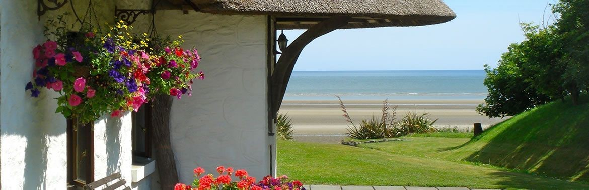

The Cottages

Seabank, Bettystown , Co Meath
Tel: 041 982 8104
Email: info@cottages-ireland.comCome and explore the mysterious and ancient beauty of the Boyne Valley. Stretch your limbs and ease your mind on miles of sandy beach.
Six exclusive 300 year old thatched holiday cottages nestle on the beach front on Ireland’s East Coast. The Cottages Ireland offer luxury holiday accommodation in the peaceful, tranquil surroundings of large organic flower gardens. With easy access to Drogheda and the Boyne Valley and Dublin City
Superbly located for a dream holiday in Ireland whether for Golf, Fishing, Walking, Heritage or just to relax, this is the ideal get away location or extended holiday.
The Cottages can be enjoyed by families, couples, honeymooners – anyone who wants a break from the hustle and bustle of modern day living, experience an idyllic haven of peace in this private gated hamlet-like setting.